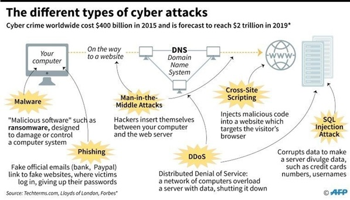
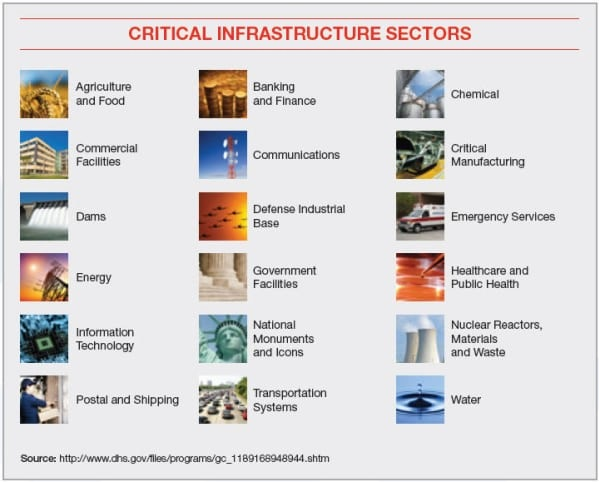
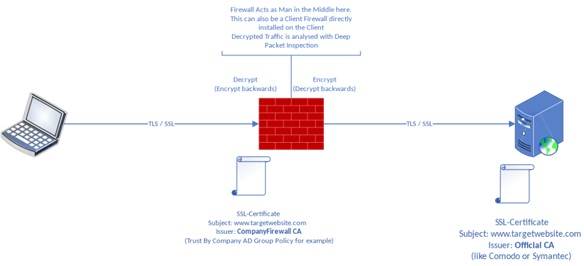
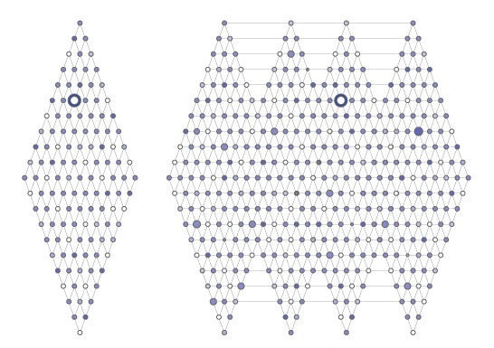
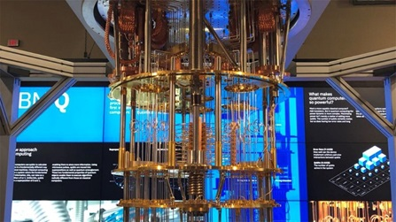

<!DOCTYPE HTML>
<!--
	Solid State by HTML5 UP
	html5up.net | @ajlkn
	Free for personal and commercial use under the CCA 3.0 license (html5up.net/license)
-->
<html>
	<head>
		<title>Stemworks | Cybersecurity</title>
		<meta charset="utf-8" />
		<meta name="viewport" content="width=device-width, initial-scale=1, user-scalable=no" />
		<link rel="stylesheet" href="assets/css/main.css" />
		<noscript><link rel="stylesheet" href="assets/css/noscript.css" /></noscript>
	</head>
	<body class="is-preload">

		<!-- Page Wrapper -->
			<div id="page-wrapper">

				<!-- Header -->
					<header id="header">
						<h1><a href="index.html">Stemworks</a></h1>
						<nav>
							<a href="#menu">Menu</a>
						</nav>
					</header>

				<!-- Menu -->
					<nav id="menu">
						<div class="inner">
							<h2>Menu</h2>
							<ul class="links">
								<li><a href="index.html">Home</a></li>
								<li><a href="teamprofile.html">Team Profile</a></li>
								<li><a href="industrydata.html">Industy Data</a></li>
								<li><a href="itwork.html">IT Work</a></li>
								<li><a href ="groupproject.html">Group Project</a></li>
								<li><a href="ittechnologies.html">IT Technologies</a></li>
							</ul>
							<a href="#" class="close">Close</a>
						</div>
					</nav>

				<!-- Wrapper -->
					<section id="wrapper">
						<header>
							<div class="inner">
								<h2>Cybersecurity</h2>
								<p>Researched and written by Jake Palermo</p>
							</div>
						</header>

						<!-- Content -->
							<div class="wrapper">
								<div class="inner">

									<p>Cybersecurity is an umbrella term used for the variety of technologies aimed at ensuring the security of all types of computing systems, in all areas, at all times. It provides a level of protection between you and those with malicious intent. A few of the common categories within cybersecurity are:<br />
									<li>Network Security</li>
									<li>Application Security</li>
									<li>Information Security</li>
									<li>Operational security</li>
									<li>Disaster Recovery and Business Continuity</li>
									<li>End-User Education</li></p>

									<p>Since its inception, cybersecurity has been a constant game of cat and mouse with the continuous power struggle between the IT industry at large and nefarious actors. The birth of Cybersecurity was in 1971 with the story of the “Creeper” and the “Reaper”. The Creeper was the original computer virus and was created by Bob Thomas. He created the program to propagate itself through network and once a system was infected, the computer would have a text document appear that says, “I’m the Creeper: catch me if you can”.</p>  

									<p>The program wasn’t malicious but was a proof of concept for a theory from the 1940’s, which hypothesised that self-replicating programs were possible. In response to the Creeper, the Reaper was born, the first form of an antivirus. The Reaper would disseminate itself across the network in a similar way to the Creeper, searching for any sign of the virus. When the Reaper found the Creeper, it would delete it and therefore stop it from spreading further across a network.</p>

									<p>Cybersecurity has rapidly evolved from these humble beginnings into the cutting-edge technology it is today out of necessity. Today the cyber threats are far more complex, the world isn’t so black and white anymore and includes nation state actors that horde zero day exploits, that have in the past been deployed not only against enemy states but also friendly nations (e.g. Operation Socialist: UK’s GCHQ infiltrated the Belgacom, Belgium’s national telecom using a technique called Quantum insertion).</p>

									<p>Some of the most common cyber threats we face today are (also see diagram 1):<br />

									<li><b>DDoS Attacks:</b> Botnets targeting and overloading servers to make them inoperable and cause damage to the target</li>

									<li><b>Malware:</b> Software designed with malicious intent e.g. spyware, Rootkits etc</li>

									<li><b>Phishing:</b> Dissemination of emails with links to malicious websites or containing malware on an untargeted large scale</li> 

									<li><b>Spear Phishing:</b> Targeted phishing attacks on key individuals in aims to infiltrate the target</li>

									<li><b>Ransomware:</b> Malicious software designed to encrypt the targets systems and hold it ransom</li>

									<li><b>Man-in-the-Middle Attacks:</b> When an individual spoofs a Wi-Fi network to control and collect the network traffic or a malware that intercepts network traffic from an infected device and sends it back to a Command-and-Control server owned by the hacker</li>

									<li><b>IoT Device Exploitation:</b> Often IoT devices are built and sold without much consideration for security and often provide a foot hold in a network, where bad actors can pivot from into the network</li> 

									<li><b>Data Breaches:</b> Where critical serves are attacked to retrieve sensitive data that often sold on the black market</li>

									<li><b>Cryptojacking:</b> Program designed to infiltrate a system and utilise its resources to mine cryptocurrencies illegally</li> 

									<li><b>State Sponsored Attacks:</b> Groups or individuals acting on the behalf of a country to perform cyber espionage or sabotage (e.g. Stuxnet )</li> 

									<li><b>Computerised Physical Infrastructure Attacks:</b> Targeting of infrastructure that have consequences in the real world, these systems are usually utilising SCADA(see diagram 2)</li> 

									<li><b>Social Engineering:</b> The use of social manipulation to exploit the weakest link in cybersecurity, humans 

									<li><b>SQL Injection attacks:</b> Structured Query Language is often used for communication between users and the servers. These attacks exploit improper user input sanitisation to inject lines of code into the server.</li></p>

									<p><br /><b>Diagram 1: Where in the network these attacks are implemented</b></p>
									<p><br /><b>Diagram 2: Critical physical infrastructure that are potential targets</b></p>

									<p>
									With these new, persistent threats comes the demand for technologies to counter them, that’s where the advancing technologies of cybersecurity comes in. Today we neutralised these threats with a multi-faceted approach, with the aim to eliminate penetration of a system or at the very least exhaust hackers' resources and time by implementing complex defensive security infrastructure. Some of the tools utilised in the area of cyber security include:<br />

										<li><b>Password Managers:</b> Used to manage multiple passwords with one master key and multiple encrypted passwords that are used in 3rd party applications e.g. Facebook. This prevents the storage of recycled passwords as well as being stored in weak hashes in databases in case of a data breach</li>

										<li><b>VPNs:</b> Virtual Private Networks provide a secure, anonymous connection preventing packet sniffing if a node is controlled</li>

										<li><b>Advanced Anti-virus/Anti-malware software:</b> Software designed to identify and remove known malware with constantly updated libraries from threat research labs</li>

										<li><b>Context-Aware Behavioural Analytics:</b>Software that analyses activity on a network and creates a “context” based on normal activities and monitors for abnormalities</li>

										<li><b>Data Loss Protection:</b> System of storing backup data in an airlock or off site to prevent the complete loss of data in the case of an attack</li>

										<li><b>Identity and Access Management (IAM):</b> Software that identifies and monitors users as well as controlling their permissions over a network</li> 

										<li><b>Intrusion Detection Systems (IDS):</b> Software that monitors a network for signs of infiltration, these include monitoring out-going packets</li>

										<li><b>Intrusion Prevention Systems (IPS):</b> Software that actively prevents unauthorised access to a network</li>

										<li><b>Advanced Cryptography:</b> New age encryption methods that make it practically impossible to decrypt without the key</li>

										<li><b>Next-Generation Firewalls:</b> Software that monitors network traffic over the network like standard Firewall protocols in addition to blocking advanced malware and application-layer attacks.</li>
									</p>
									<p>In addition to the deployment of these tools, companies employ security firms to conduct penetration tests to identify current vulnerabilities in their networks, they utilise a vast array of software tools like John the Ripper (password cracker), Metasploit (exploit toolkit), Wireshark (Wi-Fi packet sniffer) and hardware tools like rubber ducky USB device (a USB device that acts like a keyboard and performs keystrokes).</p>

									<p>Cybersecurity is often driven by new threats being identified and the threats are increasing in frequency and complexity. In 2020, there is a push for future development in the realm of Cybersecurity to focus on the hardware rather than the software. There is a need for a drastic increase in computing performance to ensure a safer future by utilising more sophisticated hardware. This is to decrease the amount of time required by the user to open, inspect and analysis every packet travelling over the network (see diagram 3). Currently, we don’t have the capable hardware to do this rapidly enough to be able to react to a threat in the appropriate, critical timeframe required.</p>

									  <p><br /><b>Diagram 3: Deep Packet Inspection by a Firewall</b></p>

									<p>Over the next 3 years we can expect to see quantum computing undertake a greater role within the area of cyber security. Quantum computing will allow us to utilise the true potential of parallel processing, drastically increasing the computing power of the modern world.</p>

									<p>While quantum computing is a threat to our current cybersecurity it is also the key to our cybersecurity in the future. Our current encryption methods would take thousands of years to crack with our most powerful super computers, but quantum computers could crack it within days or even hours utilising their powerful parallel processing capabilities. And just like every other development in cybersecurity the threat helps us create the solution, one of these is a lattice-based encryption method (See diagram 4) that overcomes the issue we face with quantum computing as well as addressing our need for more powerful computing capabilities for packet analysis and faster reaction times to threats.</p>

									<p><br /><b>Diagram 4: Lattice-base Encryption</b></p>

									<p>In addition to this impact on encryption, quantum computing will completely overhaul our current cybersecurity technologies as classical standards will become obsolete in the post-quantum era. Other technologies to be impacted will be Machine Learning, Context-Aware Behavioural Analysis and invention of Quantum Random Number Generators (thought to be the true random number generation in comparison to current methods).</p> 

									<p>It’s hard to determine the true impact of quantum computing on the job market within the IT industry but there is one thing for certain, all forms of current cybersecurity will become instantly obsolete. This technology could both make certain positions redundant and create a huge reshuffling of jobs within the labour market towards the further development of quantum computing as well as a rapid scramble to close the gap in security brought upon by the introduction of quantum computing into the realm cybersecurity.</p>

									 <p><br /><b>Image 1: IMB’s 50 qubit Quantum Computer without its cover</b></p>

									 <p>The effects on myself and the people around me will be subtle as the majority of developments will be behind the scenes and the introduction of quantum computing will be slow to minimise the potential damage to the IT industry. The short-term impact of this emerging technology on myself and those around me would be the instant insecurity of our data stored with a company or 3rd parties. The current forms of encryption will immediately become obsolete and leave us vulnerable to those who wield the power of quantum computing. In the long-term, the overall impact will be hugely beneficial for myself, those around me and the world at large due to exceptionally secure methods of encryption and large processing power brought upon by Quantum Computing. If executed correctly, the data we trust a company etc with will no longer be of concern in data breaches as the encryption methods would be far beyond the capabilities of all, other than nation state actors.</p>

									<p>A concern of this technology is that it could be today’s version of the atom bomb, a technology that could put the mass at risk initially. We have no idea what will entail when we open this box and it is currently an “arms” race to achieve quantum superiority and to have the leading-edge technological capabilities over adversaries. In short, this new technological development could have devastating or reforming effects on the world at large but is largely reliant on the hands that wield it. While its highly unlikely that individuals will have their own personal quantum computers due to the complexity of the system and the intricacy of establishing a quantum state, there is the possibility that we can utilise it via cloud computing. While this will disrupt the industry, encryption is only a part of cybersecurity and doesn’t mean individuals can be careless with their security. We will still have to implement the proper precautions when navigating through this digital world like not clicking on suspicious links, using an Anti-virus, use a Firewall, use 2 factor authentication, constantly updating your systems and using strong passwords and not recycling them or using password managers. The steps we must take won’t change but the technologies behind the steps will continue to advance.</p>

								<h4>References</h4>
										<blockquote>
											<sup>[1]</sup> Ibm.com. 2020. [online] Available at: <https://www.ibm.com/downloads/cas/5VGKQ63M> [Accessed 11 April 2020].<br>  

											<sup>[2]</sup> Services, P., 2020. Cyber Attack - What Are Common Cyberthreats?. [online] Cisco. Available at: <https://www.cisco.com/c/en/us/products/security/common-cyberattacks.html#~types-of-cyber-attacks> [Accessed 11 April 2020].<br>  

											<sup>[3]</sup> Forcepoint. 2020. What Is Cybersecurity?. [online] Available at: <https://www.forcepoint.com/cyber-edu/cybersecurity> [Accessed 11 April 2020].<br>

											<sup>[4]</sup> Usa.kaspersky.com. 2020. [online] Available at: <https://usa.kaspersky.com/resource-center/definitions/what-is-cyber-security> [Accessed 11 April 2020].<br> 

											<sup>[5]</sup> Woods, D., 2020. Cybersecurity's Future: Powered By Hardware. [online] Forbes. Available at: <https://www.forbes.com/sites/danwoods/2018/09/07/cybersecuritys-future-powered-by-hardware/#1af6fc075ced> [Accessed 11 April 2020].<br> 

											<sup>[6]</sup> Mavroeidis, V., Vishi, K., D., M. and Jøsang, A., 2018. The Impact of Quantum Computing on Present Cryptography. International Journal of Advanced Computer Science and Applications, 9(3).<br> 

											<sup>[7]</sup> Daimler.com. 2020. Browser Update Needed | Daimler. [online] Available at: <https://www.daimler.com/magazine/technology-innovation/quantum-computers-future-daimler-google-ibm-technology.html> [Accessed 12 April 2020].<br>

											<sup>[8]</sup> Research.ibm.com. 2020. Lattice-Based Cryptography - IBM Research - US. [online] Available at: <https://www.research.ibm.com/5-in-5/lattice-cryptography/> [Accessed 12 April 2020].<br> 

											<sup>[9]</sup> En.wikipedia.org. 2020. Deep Packet Inspection. [online] Available at: <https://en.wikipedia.org/wiki/Deep_packet_inspection#/media/File:SSL_Deep_Inspection_Explanation.svg> [Accessed 12 April 2020].<br> 

											<sup>[10]</sup> Create a culture of innovation with IIoT World!. 2020. ICS/SCADA Security – Create A Culture Of Innovation With Iiot World!. [online] Available at: <https://iiot-world.com/cybersecurity/page/2/> [Accessed 12 April 2020].<br> 

											<sup>[11]</sup> Kardon, L., 2020. The 6 Types Of Cyber Attacks To Protect Against In 2019. [online] Pagely®. Available at: <https://pagely.com/blog/cyber-attacks-in-2018/> [Accessed 12 April 2020].<br>
										</blockquote>
								

								</div>
							</div>

					</section>

				<!-- Footer -->
					<section id="footer">
						<div class="inner">
							<ul class="copyright">
								<li>&copy; Stemworks Inc. All rights reserved.</li><li>Design: <a href="http://html5up.net">HTML5 UP</a></li>
							</ul>
						</div>
					</section>

			</div>

		<!-- Scripts -->
			<script src="assets/js/jquery.min.js"></script>
			<script src="assets/js/jquery.scrollex.min.js"></script>
			<script src="assets/js/browser.min.js"></script>
			<script src="assets/js/breakpoints.min.js"></script>
			<script src="assets/js/util.js"></script>
			<script src="assets/js/main.js"></script>

	</body>
</html>
